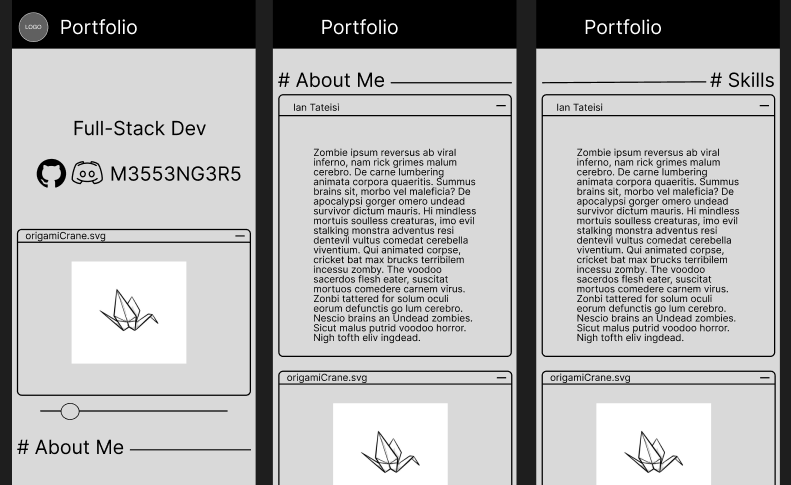

PWP Milestone 2 Wireframes
- The primary idea for the layout of the website is to use separate boxes or windows to emulate a 'messy'(ish) computer desktop screen with multiple windows open. It will (hopefully) feature a box that contains a working render of an origami model, that will be placed next to some content such as my 'about me' or 'skills'.
- The mobile layout will be similar except with these boxes stacked vertically instead
Desktop Wireframe
Mobile Wireframe
